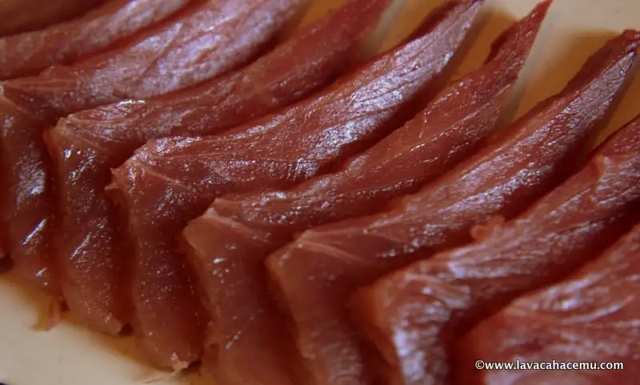
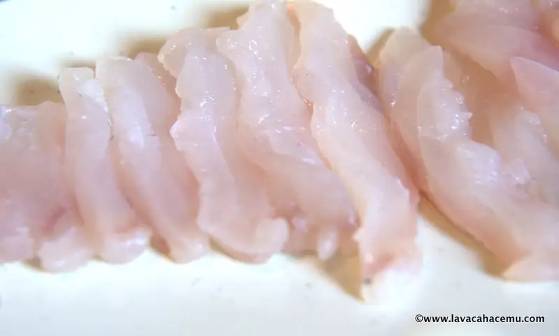
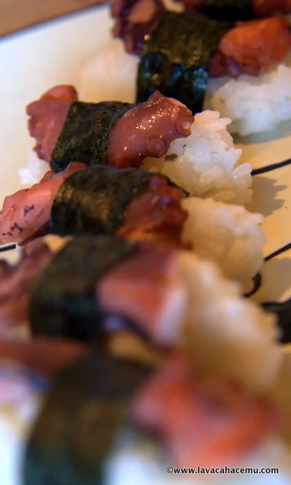

pescado teridáctil

{kind=link}

{kind=link}

{kind=link}
Después de algunos días con antojo de sushi, pero sushi "de adeveras" nigiri sushi, no maki rollitos que luego salen con sus cosas y los empanizan o capean y fríen, solo para aderezarlos con una salsa de chipotle que le mata todo el sabor delicado del arroz preparado y la frescura del pescado o marisco; por fin se me hizo en este más reciente viaje a Ensenada, una visita a la abarrotera, como le decimos al absa allá para comprar lo necesario y luego una vuelta por el mercado de mariscos, o, mercado negro como le decimos los ensenadenses. de la paseada salieron un trozo de atún, una mojarra, un par de macarelas y un pulpo para saciar el antojo. No puedo dar muchos detalles acerca de la receta para el arroz porque al modo mío fué al tanteo. Después de lavar el arroz 7 veces, se pone a cocer con el agua que debe llevar (hasta el primer metatarso por encima del arroz) y posteriormente se sazona con vinagre y azúcar. De ahí en adelante, es cortar el pulpo ya cocido y amararlo con un pedazo de alga a una bolita de arroz. Para el sashimi, poes lo mismo, al tanteo, pero tratando de hacer los cortes de manera que te toque la menor cantidad de tejido conectivo para que la textura sea lo mas suave posible.
Y bueno, lo que me animó a postear de nuevo en la página (conste que no comencé el post disculpándome) fue el invento de hoy para comer las "sobras" del sushi. Sería algo así como un teri glaze, pero un poco modificado. Lo que hice fué:
- Dorar trozos pequeños de pescado enharinados (harina y un poco de sal).
- Dorar trozos de atún con costra de ajonjolí.
- Mezclar en un tazón 2 Cdas de salsa soya, 2 Cdas de vinagre de arroz, 1 Cda de agua, 2 Cdas de azúcar, 1/4 cdita de aceite de ajonjolí, 1/4 cdita de chipotle molido, 1 pizca de sichimi togarashi y 1/8 de cdita de salsa de pescado ( nước mắm ).
- Agregar la mezcla teridáctil al sartén para terminar la cocción del pescado.
- Retirar el pescado, montándolo en un plato.
- Reducir la salsa hasta que quede espeso, casi a punto de volverse caramelo.
- Vertir la salsa sobre el pescado.
- Comer =D.